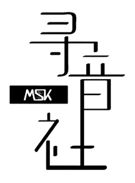

What is Music Seeker (MSK)?

MSK is a music club in Southern University College. It's full name is Music Seeker. This club cultivate the students' interests in music and provide them opportunities to appreciate various kinds of music through music competitions and performances. After joining MSK, you can learn music and also play music with other music lover together.
Where is MSK music club room?
It is a room which number 410 at the forth floor of Southern University College's main building beside the male toilet.
When is MSK's music lesson time?
Please refer to our LESSON page.
Why join MSK?
By join MSK, you can:
- Notification of concerts and any activities in advance
- Participate MSK's activites with special offer
- Provide use of practice room and instrument
- Learn any instrument you like
Who can join MSK?
Every Southern University College's undergraduate students and teachers can join MSK.
How to join MSK?
You can join MSK by apply to become a member during the Carnival Festival that organize every first week of semester.